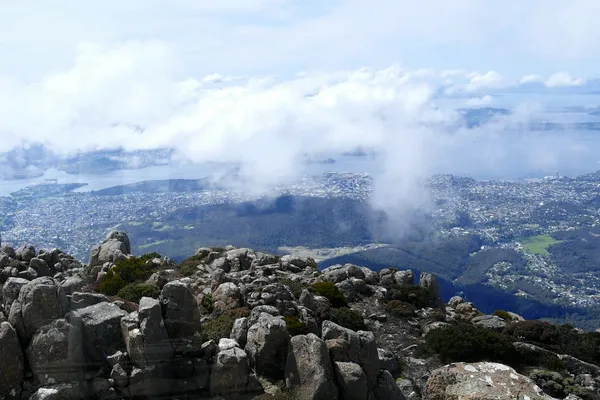

Tasmania: Australian single malt

Photo: Don Ricardo on Unsplash
Tasmania sparked Australia's whisky revival after Bill Lark helped change the law to allow small distilleries in 1992.
How it's made
Many distilleries use local barley and small casks, often ex-wine or ex-fortified barrels.
Malted barley, often grown in Tasmania, is mashed, fermented and double distilled in copper pot stills. Some distillers dry part of the malt over local highland peat for an earthy smoke.
History
Tasmania banned small stills from 1838 until 1992, when Bill Lark persuaded the government to change the law. Lark Distillery led a revival, and the island now has dozens of distilleries.
Ageing and label terms
Australian whisky must age at least two years in wood. Many distillers use small casks, often ex-port (tawny), apera (sherry-style) or wine barrels, which add flavour quickly in Tasmania's cool climate.
Styles
Rich, fruity single malts from fortified-wine casks, cleaner ex-bourbon styles and lightly peated whiskies.
Rules and protected names
Australia has no protected whisky regions; the rules for whisky cover minimum ageing and strength. Many bottlings are single cask and released in small numbers.
How to serve and classic cocktails
Neat with a little water; lighter styles work in a highball or an Old Fashioned.
With food
Try with Tasmanian cheeses, smoked salmon, oysters or dark chocolate.
Good to know
Sullivans Cove French Oak won the World's Best Single Malt title in 2014, bringing Tasmanian whisky to world attention. Bottles are often small batch and can be hard to find outside Australia.
Producers
- Lark
- Sullivans Cove
- Hellyers Road
Bottles to try
Sullivans Cove French Oak Single Cask
Dried fruit, toffee, spice, raisins and polished wood.
Strength: 47.5% · Age and cask: Single cask, ex-tawny (fortified wine) French oak; age varies by cask
Made near Hobart from Tasmanian barley, each bottling comes from one cask. A French Oak bottling was named the World's Best Single Malt at the 2014 World Whiskies Awards, putting Tasmanian whisky on the map.
Serve: Neat, with a little water if you like
Lark Classic Cask Single Malt
Rich malt, dark fruit, toffee and spice with a long, warm finish.
Strength: 43% · Age and cask: Ex-Apera (Australian fortified wine) casks
Bill Lark founded the distillery in Hobart in 1992 and campaigned to change a 1901 law that had stopped small-scale distilling in Tasmania. Classic Cask is the house benchmark single malt, made from Tasmanian barley.
Serve: Neat or with a drop of water
Hellyers Road Original 10 Year Old
Creamy vanilla, honey, pear and soft oak, light and unpeated.
Strength: 46.2% · Age and cask: 10 years, ex-bourbon casks
Made in Burnie on Tasmania's north-west coast by the farmers of a dairy co-operative, Hellyers Road is Australia's largest single malt distillery. Local barley and Tasmanian water, non-chill-filtered.
Serve: Neat or with a splash of water
More whisky regions
Explore all spirits in the interactive guide
The Wine Reference newsletter
New wines, stories and career guides, one email a week at most.
Over 18s only. Unsubscribe any time with one click. Your email is stored securely by Kit and never shared.
Support The Wine Reference
This guide is free, with no paywall. If it helped you choose a bottle, you can buy me a glass and keep it growing.
🍷 Buy me a glass